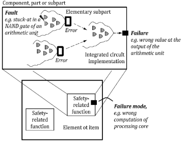
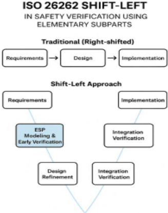
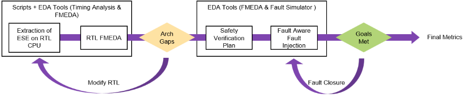
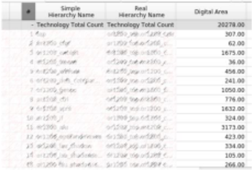
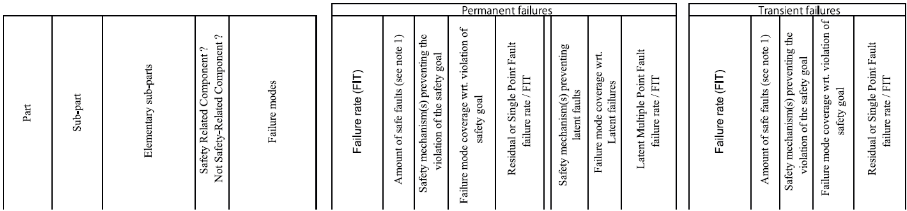

Breaking Down Failures: Elementary Subpart Granularity Being Foundation of Safety Analysis & Verification
分解失效：Elementary Subpart（基本子部件）粒度作为安全分析与验证的基础
简介
论文针对 ISO 26262 功能安全流程中 FMEDA 与故障注入长期依赖网表、安全漏洞发现过晚导致迭代成本高的问题，提出 Elementary Subpart Extraction（ESE）方法。ESE 在 RTL 阶段通过 Quick Synthesis 枚举全部存储单元（flip-flop、latch、RAM、FIFO）作为子部件根节点，静态追踪各单元的 fan-in 组合逻辑锥（COL），并用基于时序的重叠修正避免共享组合逻辑的失效率重复计数，从而把设计分解为与失效模式和安全机制直接关联的基本子部件。在此基础上建立 RTL 元素到 FMEDA 失效贡献的解析映射，可在故障仿真之前完成定量安全评估与 What-If 分析，并自动生成 Safety Verification Plan 以指导 fault-aware 定向故障注入。在约 12,000 个时序单元、450,000 个组合门的嵌入式 RISC-V CPU 案例中，论文定性声称 SPFM/LFM 收敛改善、故障注入负载降低，实现安全验证的 shift-left。其结构化分解与故障列表精简思路对高复杂度存储/互连 IP 的验证自动化具有借鉴价值。
问题
传统功能安全工作流存在三大瓶颈：定量 FMEDA 与故障注入通常在网表阶段才进行，架构变更难以纳入，安全分析沦为最终检查点；大量注入的故障在功能或结构上冗余，多轮迭代带来仿真与算力开销；传统 FMEDA 是被动式的，只关注什么失效而非为何脆弱，未受保护的组合逻辑锥（COL）、安全机制覆盖不全等架构弱点直到流片网表或硅后验证才暴露，导致多次设计/验证迭代、进度与验证成本上升。
方法
提出 Elementary Subpart Extraction（ESE）自动化安全分析方法：在 RTL 上用 Quick Synthesis 枚举所有时序单元作为 elementary subpart 根节点，建立时序节点与潜在故障源的一对一映射；用静态依赖分析追踪每个单元的 fan-in COL 作为其信息流域；通过基于时序的依赖分析修正不同时序单元 COL 之间的重叠，避免共享组合逻辑在聚合失效率时被重复计数；为每个子部件计算失效率 λ_ESP 形成基于 RTL 的 FMEDA 结构骨架，并将结构相似的 ESE 聚合为 FMEDA 条目；再用 EDA 工具把 FMEDA 条目自动转换为 Safety Verification Plan，驱动 fault-aware 定向故障注入，形成 FMEDA 结构分析与 FI 行为结果之间的闭环验证，并支持设计阶段的增量更新（如新增安全机制）。
关键结果
未在论文中说明：正文仅定性声称 SPFM 与 LFM 收敛改善、故障注入负载降低、安全验证周期缩短，Table 2/Table 3 的具体数值未在正文中给出
创新点
相对传统基于网表的 FMEDA 与较穷举的故障注入，ESE 把安全分析前移到 RTL 抽象层：以时序单元加 fan-in COL 为粒度做结构化分解，并用时序重叠修正解决失效归属的重复计数问题，从而在故障仿真之前即可定量评估 SPFM/LFM、做 What-If 分析并生成可追溯的验证计划，把 FMEDA 从合规性事后活动转变为 RTL 开发全过程中的动态设计优化工具。
团队参考意义
相关度级别：medium
命中能力域：2.4 设计验证方法学 | 2.7 EDA/验证自动化与 AI 辅助
理由：论文核心是 ISO 26262 功能安全（FMEDA、SPFM/LFM、安全机制、诊断覆盖率），并非团队存储/互连 IP（LPDDR、HBM4、UCIe 等）的直接技术栈，团队七域中也无功能安全专项；但其'RTL 结构化分解→精简故障列表→定向故障注入→自动生成验证计划'的 shift-left 思路，与 2.4 验证方法学中的故障注入、验证计划与覆盖率闭环，以及 2.7 的脚本+EDA 工具链流程自动化直接相关。若团队 IP 未来进入汽车等安全关键市场（如车用 LPDDR/UCIe），该流程可作为 RTL 级安全分析自动化的方法参考。
建议动作：作为方法参考存档
中文全文
Breaking Down Failures: Elementary Subpart Granularity Being Foundation of Safety Analysis & Verification
Luc Baudoin，高级安全工程师，AMD 奥斯汀（Luc.Baudoin@amd.com）
Vedant Garg，解决方案架构师，SYNOPSYS 奥斯汀（Vedantg@synopsys.com）
Abstract
在 ISO 26262（下文简称“该标准”）指导下的功能安全，已成为面向汽车及其他安全关键领域的复杂半导体设计的核心。该标准 [3] 将明确的指导扩展至半导体元器件，重点涵盖硬件故障分析、安全机制以及故障注入的作用。
半导体供应商面临的一些实际挑战包括：
然而，当今的流程仍然依赖于在生命周期后期才发现薄弱环节，这会造成代价高昂的迭代，并给安全论证的编制带来风险。因此，需要一种系统化、由自动化驱动的方法，以便在符合该标准指导 [3] 的同时加快收敛。
图 1 取自该标准 [3]，就如何将安全组件划分为部件（Part）、子部件（Subpart）和基本子部件（Elementary Subpart）提供了指导。此外，基本门（primitive gate）中的故障（Fault）可能导致时序逻辑（Sequential logic）中的错误（Error），若未受保护，则可能进而引发失效（Failure）。如果错误被检测或发现，则该失效随后可以得到缓解。

本文提出基本子部件提取（Elementary Subpart Extraction, ESE）方法，该方法提供了一个与该标准 [3] 相一致、真正实现左移（shift-left）的安全分析框架。通过将设计分解为能够反映失效模式和安全相关性的基本子部件，ESE 能够在流程早期系统地识别差距。这显著减少了为证明安全目标达成所需的代价高昂的迭代次数和故障注入数量。
如该标准 [3] 所述，安全原子单元的分解是通过将寄存器传输级（RTL）/网表逻辑分解为具有语义意义的基本子部件来完成的。这些子部件代表存储、组合路径和控制逻辑。每个子部件都直接关联失效模式，并映射到安全机制。本文提出的框架不仅提供结构分解，还在 RTL 元素与 FMEDA 级别的失效贡献之间建立了分析性映射，从而能够在远早于故障仿真的阶段进行定量评估。
关键词：FMEDA、故障注入、失效模式、基本子部件、ISO 26262、诊断覆盖率、安全机制、设计验证、SPFM、LFM、PMHF
A. Background and traditional approach
汽车片上系统（SoC）中的功能安全要求在定量安全保证与验证效率之间取得审慎的平衡。该标准为实现这一平衡建立了严格的框架，规定了一个从危害分析与风险评估（HARA）出发，经由安全目标推导、技术安全概念制定，最终对所实现的安全机制进行验证与确认的生命周期。在该框架内，硬件架构度量——尤其是单点故障度量（SPFM）和潜在故障度量（LFM）——是证明合规性的关键证据。要达到这些指标，需要对半导体设计进行详细的失效模式、影响与诊断分析（FMEDA）。[2]
早期的 FMEDA 方法大多依赖人工且以定性为主，依靠设计人员的洞察将潜在失效模式映射到其影响。随着设计复杂度不断提升，出现了利用结构网表分析以及在寄存器传输级（RTL）或门级仿真（GLS）进行故障注入的自动化方法。
B. Problem statement
传统工作流程存在三大瓶颈：
1. Late availability of data:
传统上，故障注入和定量 FMEDA 都是在网表上执行的。任何架构变更都极难被纳入其中，这使得该步骤仅仅成为最终检查点。
2. Simulation and compute overhead:
需要花费多次迭代来去除大多数在功能上或结构上冗余的注入故障，从而增加了计算开销。
3. Limited architectural insight:
传统的 FMEDA 是被动式的，关注的是何处会发生失效，而非其为何存在脆弱性。诸如未受保护的组合逻辑锥（COL）、安全机制覆盖不完整或诊断不一致等架构弱点，往往直到在流片后的网表上运行故障注入活动、或在硅验证期间才被发现。
半导体设计中的安全验证在很大程度上仍然是被动式的，即在 RTL 冻结之后或验证收敛期间才去解决安全覆盖率的不足。这种滞后的发现要么导致多轮设计与验证迭代，要么需要在软件诊断上投入额外的工作。这种方法显著增加了进度时间、风险和验证成本。
Issues in a typical design flow are:
本文提出基本子部件提取（Elementary Subpart Extraction, ESE）——一种自动化安全分析方法，该方法利用扇入 COL 分析和基于时序的重叠校正，将设计的时序逻辑分解为安全相关单元。ESE 框架在 RTL 层级与 FMEDA 层级的故障贡献之间建立了分析映射，从而能够在故障仿真之前很早的阶段实现定量评估。
A. Elementary subpart Extraction
基本子部件提取（Elementary Subpart Extraction, ESE）是一种结构抽象方法学，旨在直接在 RTL 抽象层级上实现定量的 FMEDA 级安全分析。它提供了一种早期的、系统化的方式，将架构假设与结构故障模型相关联，从而最大限度地减少传统安全分析对后期设计产物的依赖。ESE 框架不仅提供结构分解，还在 RTL 元素与 FMEDA 级失效贡献之间建立了分析映射，从而能够在故障仿真之前很早的阶段实现定量评估。我们利用这一概念，将 RTL 设计分解为若干基本子部件（elementary subpart, ESP），其中每个 ESP 以一个时序逻辑单元（通常为触发器、锁存器或存储器位）及其 COL（即驱动其输入的所有组合逻辑）为锚点[3]。来自标准 [3] 的图 2 可以被解读为表达了相同的概念：组合逻辑门的“海洋”扇入至某个时序单元，而该时序单元最终导致失效。
· Identification of sequential elements
所有存储元件（例如触发器、锁存器、RAM、FIFO）均在 RTL 层级（使用 Quick Synthesis）被枚举。这些元件中的每一个都成为一个基本子部件的根节点。该步骤在时序节点与潜在故障源之间建立了一一映射。[8]
对于每个时序元件，使用依赖性分析对其组合 COL（即所有可能影响该元件取值的逻辑路径）进行静态追踪。这一逻辑锥有效地

代表了该元件的信息流域，同时捕获了可能对其状态产生贡献的直接组合逻辑以及层次化的 RTL 表达式。[4]
· Failure rate attribution
每个子部件的故障率（λ_ESP）计算如下：
其中：
所得的 λ 值按子部件逐一存储，构成基于 RTL 的 FMEDA 的结构主干。
来自不同时序元件的 COL 常常相互重叠，导致共享组合逻辑在聚合故障率中可能被重复计数。ESE 通过基于时序的依赖性分析来解决这一问题：
上述步骤通过脚本以及用于设计的各类 EDA 工具与时序分析工具的组合实现了自动化，成为本方法的第一步。
B. Safety Analysis for FMEA / FMEDA
安全分析是对可能危及电气/电子（E/E）系统功能安全的故障、失效与危害进行系统性识别和评估的过程。其目的在于确保安全目标与安全要求得到定义、实现并加以验证，从而使残余风险降低至可接受的水平——该水平由汽车安全完整性等级（ASIL）[3]确定。
正如多项先前研究[8][7]所强调的，安全分析的关键目标在于：
鉴于现代片上系统（SoC）的规模与复杂性——其包含数百万个时序元件以及相互交互的 IP——标准 [3] 引入了一种层次化分解模型，使半导体安全分析既切实可行又可追溯。这种层次化分解使安全分析能够在多个抽象层级上执行，每一层级都进一步细化所需的细节程度，并确保安全目标、安全要求与验证结果之间的映射保持一致。如表 1 所示，这种分解支持一种自底向上的组合式方法论：在较低层级（子部件或基本子部件）上执行的分析可以被复用，并向上聚合为更高层级的安全度量。该方法在底层失效数据与系统级安全保障之间建立了可扩展且可追溯的关联。
| Level | Safety Activities | Verification Focus |
|---|---|---|
| Full Semiconductor device under analysis | SoC safety plan, FMEDA summary | Component |
| Part | Safety architecture design, ASIL decomposition, top-level SPFM/LFM computation | Architectural verification, safety goal tracing |
| FMEDA preparation, local definition | mechanism Block-level simulation and fault injection | Subpart safety |
| Elementary Subpart Fault modeling, diagnostic | RTL/Gate Fault injection, formal proofs | coverage analysis |
| Level | Safety Activities | Verification Focus |
上述工作利用从基本子部件提取的数据，并借助 EDA 工具完成了 FMEDA。
C. Integration of ESE FMEDA for Early Verification
半导体设计中的安全验证传统上是一项后期活动，通常在门级网表可用之后才进行。基本子部件提取（ESE）的引入将这一验证提前到设计周期的早期，使基于寄存器传输级（RTL）的安全验证成为可能，这与标准针对半导体安全生命周期活动提出的“早期验证”建议相一致 [3]。在标准的汽车安全流程中，故障注入（FI）用于验证诊断覆盖率（DC）并确认安全机制的鲁棒性。然而，在门级执行这一工作会带来高昂的计算成本和有限的敏捷性。将 ESE 导出的 FMEDA 模型集成到 FI 中可以同时应对这两个挑战，在 RTL 层级提供结构精度和功能关联性。[1] [5] [6]
针对性 FI，这可以在保持安全相关区域完整性的同时减少仿真负载。我们能够生成精确的故障列表，从而降低故障注入的负载。结果闭环协作，这在 FMEDA 结构分析与 FI 行为结果之间建立了闭环验证回路，同时提升了可追溯性与覆盖率可问责性。设计阶段的动态更新，由于 ESE 在 RTL 层级运行（快速综合），诸如添加安全机制或修改逻辑等增量设计更新可以在设计过程的早期完成。
图 3 对比了传统方法与涉及基本子部件提取和早期验证的新方法，后者最终为安全验证流程带来了整体上的左移。

Design under test (DUT) (representative):
本案例研究中使用的 CPU 核是一个小型嵌入式 RISC-V 设计，采用顺序执行、单发射架构。其 RTL 实现包含约 12,000 个时序元件（如触发器和锁存器）以及约 450,000 个组合逻辑门。初始基线配置已包含若干安全机制，例如针对寄存器堆读写操作的奇偶校验保护、数据 RAM 上的纠错码（ECC）、一个基本的看门狗定时器，以及针对控制寄存器写入的合理性检查。图 4 展示了本案例研究中将用于测试该 CPU 核的整体方法与流程。

A. Extraction of ESE on the RTL CPU
图 5 展示了提取的数据如何被导入 FMEDA 工具。这些数据将用于建立各种失效模式与设计的关联。
B. Safety Analysis Using ESE Data
结构上相似的 ESE 被聚合为 FMEDA 条目，并将其有效面积和失效率合并计算。早期 FMEDA 提供了在 RTL 层级执行 What-If 分析的能力，并可预览整体安全度量的有效性以及架构脆弱性。图 6 展示了该 IP 的 FMEA 分解，以及每种失效模式实际上如何代表所分析的硬件逻辑。一旦我们完成了所有与设计相关联的失效模式以及安全机制/诊断的映射，我们就能够以图 7 所示的格式提取出完整的 FMEDA。使用 EDA 软件确实有助于实现自动化和错误检查，以及跟踪此过程中发生的变更。



C. Generation of Safety Verification Plan
Through automated extraction, the FMEDA entries with associated design is systematically converted into a comprehensive Safety Verification Plan , ensuring complete and traceable coverage.
Fault-aware fault injections are employed, allowing faults to be introduced in relevant contexts, which enhances both the relevance of tests and the effectiveness of safety validation. Key benefits of this process include accelerated test creation and the ability to directly link results to specific failure modes and safety goals, supporting audit readiness and regulatory compliance. This approach reduces manual effort and minimizes the risk of human error, while providing clear documentation for efficient collaboration across teams.
#### Safety Verification Plan ####
# 安全机制定义 SafetyMechanism PSM_001 { Detect{ "top_testbench.dut_top_i.core_cpu.ipx_rf.safety_err_code" } } # 故障模式可观测性 FailureMode FM_001 { Observe { "top_testbench.dut_top_i.core_cpu.ipx_rf" } SafetyMechanisms (PSM_001) } # 安全感知故障生成 FaultGenerate FM_019,FM_021 { NA [0, 1]{PORT "top_testbench.dut_top_i.core_cpu.ipx_rf.**"} NA [0, 1]{ VARI "top_testbench.dut_top_i.core_cpu.ipx_rf.**" }
4. Conclusion
将基本子部件提取（Elementary Subpart Extraction, ESE）应用于半导体安全分析，代表了一项重大进展，带来了实用且可扩展的设计方法学。通过系统地将寄存器传输级（RTL）分解为细粒度的子部件——其中每个子部件代表一个时序单元及其对应的扇入锥——ESE 方法将安全分析从被动的验证活动转变为主动的架构设计实践。从定量角度来看，应用 ESE 在单点故障度量（SPFM）和潜在故障度量（LFM）的收敛性方面均取得了显著改善。基于面积加权的子部件建模提供了更精确的故障率归因和诊断平衡，从而保证了安全分析的准确性。[5][6]
| Topics | Elementary Subpart Methodology Contribution/Gains |
|---|---|
| Shift-Left Enablement (FMEDA) | Enables FMEDA computation at RTL without waiting for final gate-level data. |
| Architectural Visibility | ESE-based modeling allows detection of hidden architectural vulnerabilities. |
| Iterative Efficiency | Allows rapid re-evaluation of safety metrics when RTL or safety mechanism bindings change. |
| Overlap Correction | Eliminates double counting of shared logic via timing and dependency analysis, yielding realistic λ allocation. |
| Hierarchical Integration | Supports compositional safety analysis from IP to SoC level, enabling reuse of ESP data as verified work products. |
| Scalability | This enhanced FMEDA approach leverages early RTL data to quantify failure propagation paths thus improving scalability for both FMEDA and Fault injection flow. |
| Topics | Elementary Subpart Methodology Contribution/Gains |
总而言之，基于 ESE 的 FMEDA 与验证流程为安全验证带来了可度量的左移（shift-left）效果。它减少了对穷举故障仿真的依赖，能够更早、更准确地洞察架构层面的薄弱环节，并缩短了整体的安全验证周期。通过将分析精度与自动化可扩展性相结合，ESE 使 FMEDA 从一项合规性活动转变为动态的设计优化工具，从而同时提升了效率与安全信心。
该方法学代表了迈向下一代 ISO 26262 工作流程的务实一步：安全性不再是在设计成熟之后才加以验证，而是在整个 RTL 开发生命周期中持续地进行工程设计。
| Metric | Traditional Flow | ESE Fault Aware | Improvement |
|---|---|---|---|
| IP1 | IP1 | IP1 | IP1 |
| SPFM | 62.3% | 915% | 46.8% |
| Faults Simulated | 11,604 | 7,809 | 33% |
| Unresolved Faults | 1,200 | 600 | 50% |
| IP2 | IP2 | IP2 | IP2 |
| SPFM | 77.8% | %L.06 | 16.5% |
| Faults Simulated | 72,867 | 43,632 | 40% |
| Unresolved Faults | 5,100 | 870 | 83% |
| Metric | Traditional Flow | ESE Fault Aware | Improvement |